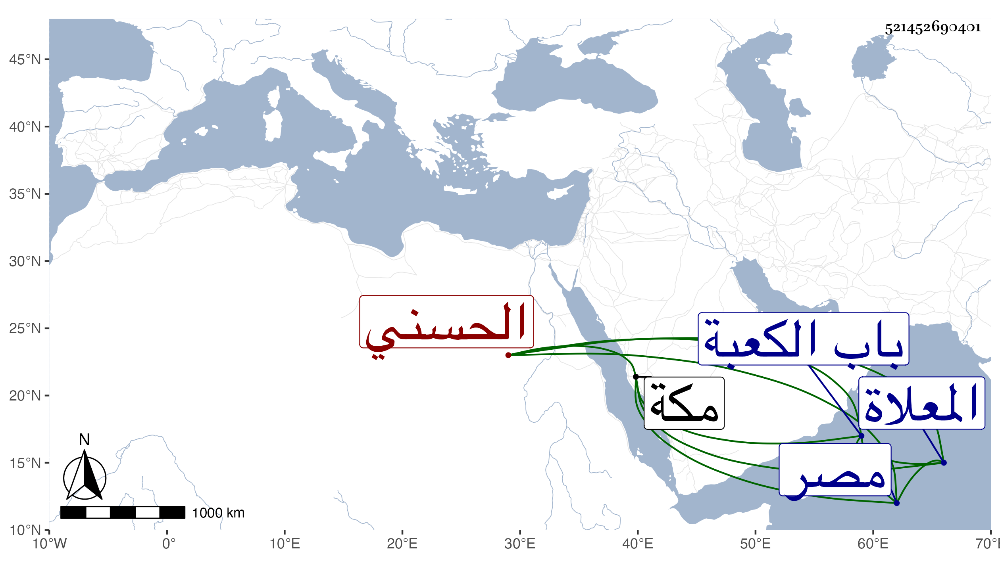

0902Sakhawi.DawLamic.ITO20230111-ara1.EIS1600.521452690401
Biography ID: 521452690401
498
عجل بن رميح الحسني من بني أبي نمي وأمه شمسية ابنة حسن بن عجلان أخت السيد بركات . توفي خارج مكة وجيء به إليها في جمع منهم ابنا السيد محمد دون أبيهما فجر يوم السبت سادس ربيع الآخر سنة سبع وثمانين فغسل وكفن ووضع عند باب الكعبة حتى صلى عليه الشافعي ضحى اليوم وشهده خلق ثم توجهوا به إلى المعلاة ودفن بمقبرة جده أبي نمى منها ، وكان قد تزوج ابنة خاله بركات وماتت معه بعد أن أولدها شهوان وغيره ثم تزوج ابنة السيد محمد ابن خاله فمات معها وهو والد عزيز وممن أرسله ابن خاله في كثير من السنين قاصدا لصاحب مصر عفا الله عنه .
